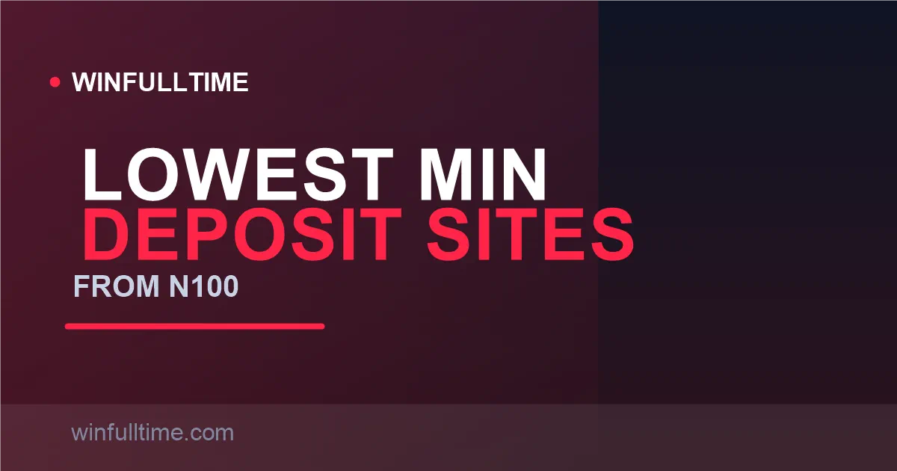

Betting Sites with the Lowest Minimum Deposit in Nigeria 2026: From ₦100

You do not need ₦10,000 to start betting in Nigeria. The market has rebuilt itself around pocket-change entry points — most big brands open an account with a ₦100 deposit, and 1xBet and Betwinner will take a single ₦30 stake. Here is the honest 2026 rundown of the lowest-minimum sites, including the trap: the minimum to withdraw is nearly always higher than the minimum to deposit.

How Deposit Minimums Actually Work
Three numbers matter on every site, and they are never the same: the minimum deposit (what your payment method will accept at the cashier), the minimum stake (the smallest single bet you can place), and the minimum withdrawal (the floor to cash out). A low deposit minimum is only useful if the stake minimum is equally low — a ₦100 deposit is meaningless on a site where every bet starts at ₦100, giving you exactly one shot with nothing left over.
Nigeria's small-stakes market is genuinely generous. In our checks across operators, minimum deposits sit anywhere from ₦100 up to ₦1,000, minimum single stakes from ₦30 to ₦100, and withdrawal floors typically from ₦1,000 upward. Crucially, these minimums are not fixed across payment methods — 1xBet, for example, accepts ₦100 via Paystack or USSD but requires ₦1,669 on Neteller.
Figures verified August 2026 from operator pages and regional review data; minimums shift with promotions and can change without notice.
1. 1xBet Lowest Stake in Nigeria
1xBet offers the lowest minimum single bet in the Nigerian market: you can place a football bet from as little as ₦30. That makes it the clear choice for bankroll-stretchers, because a single ₦100 deposit funds three separate ₦30 bets rather than one.
The deposit floor varies by payment method, which is the important nuance. Paystack and ATM card deposits via Flutterwave start at ₦100, as does USSD banking. Flutterwave online sits at ₦200, Monnify at ₦250, AstroPay at ₦250, while international wallets run higher: MoneyGo ₦430.55, Skrill ₦834.38 and Neteller ₦1,668.76. Pick a local method and you are firmly in the ₦100–₦250 club. Withdrawals via local banks are widely reported to land within minutes to a few hours.
Pros
- Lowest min stake in Nigeria at ₦30
- Flexible deposit floors by method
- Fast local bank withdrawals
- Enormous selection of leagues and markets
Cons
- Higher floors on international wallets
- Bonus terms are strict (5x) — read carefully
- Cluttered, power-user interface
Verdict: The best bankroll-stretcher in Nigeria — ₦30 stakes plus ₦100 local deposits mean your first ₦100 goes a long way.
2. Betwinner ₦30 Stakes, Global Brand
Betwinner matches 1xBet's floor with ₦30 minimum single stakes, making it one of only a handful of Nigerian sites where you can bet a single match for less than a fifty-naira note. The default deposit minimum sits around ₦250 for most local methods, with the brand known for instant bank-account withdrawals via local payment channels.
Beyond the low limits, Betwinner brings a genuinely deep sportsbook — tens of thousands of live events, strong virtual sports and a generous 200% first-deposit welcome bonus up to ₦130,000. It is a Curacao-licensed global brand with a Nigerian-localised cashier, and the small-stakes player gets the full product for a tiny entry.
Pros
- ₦30 minimum stake
- Instant local bank withdrawals
- Large live and virtual catalogue
- Strong welcome bonus
Cons
- Deposit floor (₦250) above the stake floor
- Same strict wagering as 1xBet family
Verdict: The strongest all-rounder for low stakes without giving up depth — ₦30 to bet, ₦250 minimum in.
3. 22Bet ₦30 Stakes, Simple Terms
22Bet is the third operator in Nigeria offering ₦30 minimum single stakes, and it pairs that with a straightforward ₦250 minimum deposit and clean, easy-to-navigate bookmaking. For small-stakes players who find 1xBet's interface overwhelming, 22Bet is the more approachable alternative.
It runs a solid 100% welcome bonus up to ₦207,500, supports local bank transfers, USSD and card deposits, and settles bets quickly. The market depth is very good across football, with the caveat that some niche markets are thin. As a budget entry point it is hard to beat.
Pros
- ₦30 minimum stake
- Simpler interface than 1xBet
- Competitive 100% welcome bonus
- Fast local payouts
Cons
- Deposit floor above the purest budget sites
- Some niche markets are thin
Verdict: The friendliest ₦30-stake option — same low floor as 1xBet but a cleaner experience.
4. Wazobet ₦100, Local and Simple
Wazobet is the local Nigerian favourite built around a ₦100 minimum deposit, designed specifically for the small-stakes market. It is a home-grown product with Nigerian football depth — heavy NPFL coverage — and payment methods Nigerian bettors actually use: bank transfer, USSD and card.
The trade-off is scale. Wazobet's sportsbook is smaller than the international brands, with fewer leagues and markets, and its international coverage is thinner. But for a strictly Nigerian bettor who wants a simple, local, hyper-affordable account, ₦100 to start is exactly what the market needed.
Pros
- Low ₦100 deposit floor
- Focused on Nigerian leagues
- Simple local payment methods
Cons
- Smaller international sportsbook
- Fewer markets than global brands
Verdict: The pick for NPFL-focused Nigerian bettors who want a genuinely local ₦100 entry point.
5. Bet9ja ₦100 on Nigeria's Biggest Brand
Bet9ja, Nigeria's most established bookmaker, accepts a ₦100 minimum deposit while keeping its minimum stake at ₦50. That combination — a very low entry plus Nigeria's deepest product — makes it the default choice for most local bettors even before considering price.
You get the widest football coverage in the country (120+ markets on NPFL games), the famous booking-code system for sharing tips, retail shops nationwide, virtual sports and the Super9ja jackpot. BTC and USSD deposits work well, and a single ₦100 top-up funds two ₦50 bets with the biggest brand in Nigeria.
Pros
- Low ₦100 entry on a trusted brand
- Deepest NPFL coverage in Nigeria
- Retail shops + online
- Booking code sharing
Cons
- Min stake (₦50) above Betwinner/22Bet's ₦30
- Bonus wagering is demanding (10x+)
Verdict: The safest budget bet you can place — ₦100 on Nigeria's most trusted brand with the most coverage.
Minimum Deposit Comparison Table
| Operator | Min Deposit | Min Stake | Min Withdrawal | Licence |
|---|---|---|---|---|
| 1xBet | ₦100 (local) | ₦30 | ₦1,000+ | Curacao |
| Betwinner | ₦250 | ₦30 | ₦1,000+ | Curacao |
| 22Bet | ₦250 | ₦30 | ₦1,000+ | Curacao |
| Wazobet | ₦100 | ₦100 | ₦1,000+ | Local/regional |
| Bet9ja | ₦100 | ₦50 | ₦1,000 | LSLGA |
| SportyBet | ₦100 | ₦50–100 | ₦1,000 | LSLGA |
| BetKing | ₦100 | ₦50 | ₦1,000 | LSLGA |
Ranges reflect regional review data where sources disagree. Always confirm the exact floor for your chosen payment method on the operator's cashier before depositing.
Tip: minimums vary by payment method
On 1xBet a Paystack or USSD deposit starts at ₦100, but the same operator requires ₦1,668.76 on Neteller. Always check the floor for the specific method you plan to use — local bank and USSD routes almost always carry the lowest minimums and instant credit.
Deposits by Payment Method (1xBet example)
| Payment Method | Minimum Deposit |
|---|---|
| Paystack (ATM) | ₦100 |
| USSD | ₦100 |
| Flutterwave ATM | ₦100 |
| Flutterwave online | ₦200 |
| Monnify | ₦250 |
| AstroPay | ₦250 |
| MoneyGo | ₦430.55 |
| Skrill | ₦834.38 |
| Neteller | ₦1,668.76 |
Deposit floors verified August 2026 from 1xBet Nigeria's cashier; exact values may shift, so confirm at the time of deposit.
The Withdrawal Reality Check
Here is the part most budget guides skip: the money goes out slower than it comes in. Typical Nigerian withdrawal floors run from ₦1,000 upward, comfortably above the ₦100–₦250 deposit minimums. You can deposit ₦100, but on most sites you need to bankroll up to ₦1,000 before a withdrawal is worth requesting.
The practical implication for small stakers: build a bankroll before cashing out. A single ₦100 win cannot be withdrawn anywhere — you naturally compound into the cashable range. Treat the withdrawal floor not as a hurdle but as an argument for bankroll-building rather than hit-and-run withdrawals.
Small-Bankroll Tips for Nigerian Bettors
Tip 1: Match the deposit floor to the stake floor
A ₦250 minimum deposit is far more useful on a site with ₦30 minimum stakes (Betwinner, 22Bet) than on one where every bet starts at ₦100. Pick sites where the stake minimum is a fraction of the deposit floor, so one top-up funds several bets.
Tip 2: Prefer local payment methods
Paystack, USSD and local bank transfer almost always carry the lowest deposit floors and instant credit. International wallets and cards (Skrill, Neteller, AstroPay) both raise the minimum and slow the deposit. Stay local to keep your entry as small as possible.
Tip 3: No excise tax in Nigeria — the moment matters
Unlike Kenya, Nigeria does not build an excise duty into every stake. Your ₦100 bet places the full ₦100 at risk. Just be aware a small withholding (often ~1%) may be applied to large payouts for the FIRS — check the exact net figure in your payout history.
Tip 4: Know your cash-out floor before you start
Before depositing, open the cashier and read the minimum withdrawal. If it is ₦1,000 on a ₦100 entry site, plan a small bankroll and compound your wins into cashable territory instead of pulling out after every micro-win.
Frequently Asked Questions
Which betting site has the lowest minimum deposit in Nigeria?
Wazobet, Bet9ja, SportyBet and BetKing all accept deposits from ₦100, which is the standard floor across the Nigerian market. Deposit minimums vary by payment method, though — 1xBet, for example, accepts ₦100 via Paystack, Flutterwave ATM and USSD, but requires more on other methods like Skrill (₦834) or Neteller (₦1,669).
Can I bet with just ₦100 in Nigeria?
Yes. ₦100 is the practical floor accepted by most major Nigerian operators including Bet9ja, SportyBet, BetKing and Wazobet. For even lower stakes, 1xBet, Betwinner and 22Bet let you place individual bets from just ₦30, so a single ₦100 deposit can fund several separate bets.
What is the minimum stake in Nigeria?
The lowest minimum stake in the Nigerian market is ₦30, offered by 1xBet, Betwinner and 22Bet. Most local brands set their minimum stake at ₦50 (Bet9ja and BetKing), and many online-first operators accept single bets from around ₦100.
Why is the minimum withdrawal higher than the minimum deposit?
Withdrawal floors sit above deposit minimums because operators offset bank and payment-processor transaction costs on the way out. A typical Nigerian minimum withdrawal runs from ₦1,000 upward, so plan to build a small bankroll and compound your wins into cashable territory before requesting a payout.
Do Nigerian betting sites charge a tax on deposits?
No. Unlike Kenya, Nigeria does not apply an excise tax on betting stakes or deposits. Your deposit lands in the account at its full value. Regulated operators may withhold a small percentage (often around 1%) on large payouts for the FIRS, but this is a payout-side deduction, not a deposit charge.
Make Every Small Stake Count
Build your edge with data-driven picks, head-to-head analysis and value-oriented predictions built for Nigerian and European football.
Last updated: 30 August 2026 | By Tochukwu Mesigo |
Build Winning Accumulator Tickets
Generate optimized accumulator combinations from today's data-driven predictions. Set your target odds and get instant ticket suggestions.
Pro Ticket Builder →